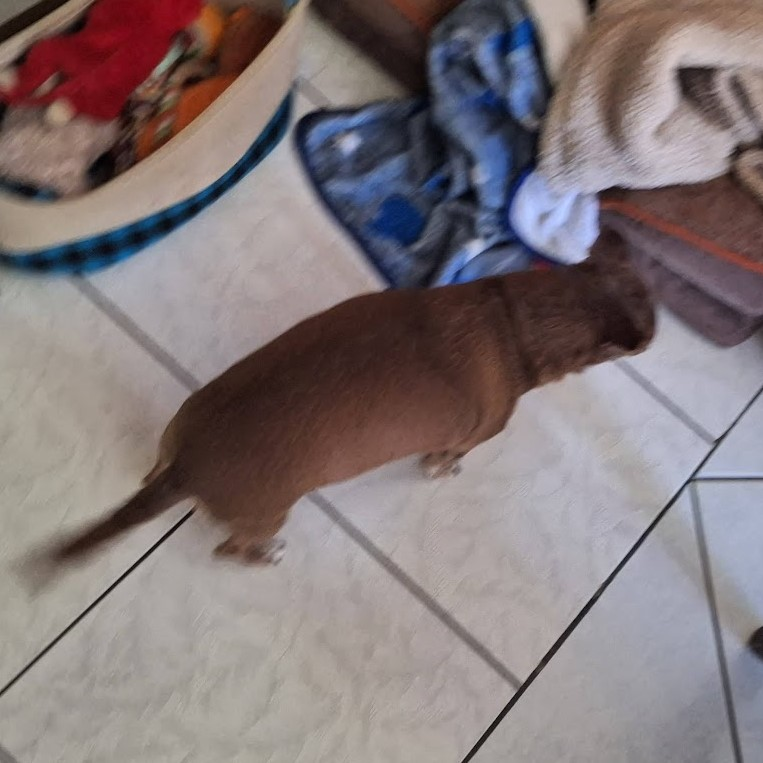

History of My Dog
My Dog was born circa 2012. She was pretty sick during her puppy years, and she was constanly monitored by my family members to make sure she get's her medication. She fortunately got cured and to this day, she's alive and kicking. Her name Hannah is dervied from Hannah Montana, a popular disney show back in the late-2000s. During her years, she progressesly got fatter, due to the things she consumes, such as leftovers or what not. Throughout the years, she progressively becomes less energetic and more sleepy, but because of her age, it is expected for senior animals to become like that. As of now, she currently hasn't got any health problems, and she's perfectly content.